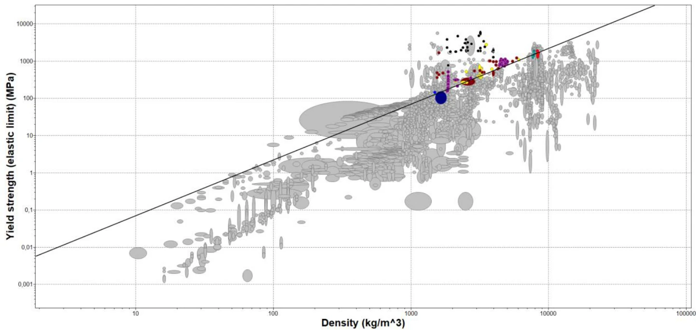
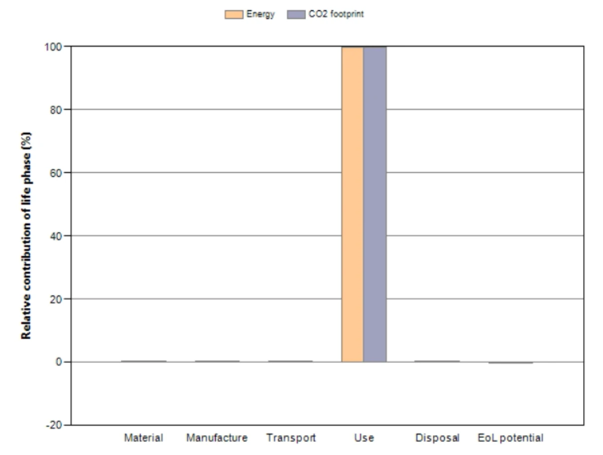

Academic team project
Material Selection and Eco-Audit of Aircraft Door
Screening candidate materials for an aircraft-door outer panel and evaluating the selected alloy in a long-haul operating scenario.
- Software
- Granta EduPack
- Period
- March to July 2025
Introduction
The project identified candidate materials for a lightweight aircraft-door outer panel. We considered mechanical performance, environmental durability, joining and cost before running an eco-audit on the preferred candidate.
Method
Requirements
The team screened materials against service temperature, durability and joining requirements using Granta EduPack.
Ranking and eco-audit
We used property charts and performance indices to rank the remaining candidates. We then modelled the selected material under a defined aircraft operating scenario.
My contribution
I used Granta EduPack and contributed to interpreting the screening and eco-audit outputs and writing the group report.


Results
Aluminium 6262-T9 was the preferred candidate under the coursework’s screening criteria. The eco-audit identified aircraft operation as the largest contributor to modelled energy demand and carbon dioxide (CO₂) emissions under the assumed scenario.
The scenario used two 8 kg panels, 800 km of road transport and a 30-year service life, with 300 operating days per year and 7,500 km travelled per operating day. The selection would require structural verification and aircraft qualification before use.

